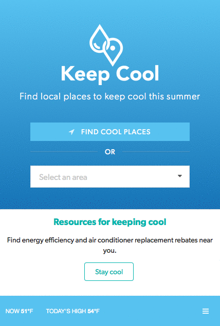

MassBuilds Explorer
An interactive mapping platform for exploring real estate developments in the Metro Boston region.
I'm a geospatial web developer with a background in urban planning and policy. I build tools and visualizations that help planners and the public understand and engage with complex issues that affect their neighborhoods and cities.
An interactive mapping platform for exploring real estate developments in the Metro Boston region.
Many governments rest on a wealth of valuable data important to policy practitioners and researchers. MassBuilds crowdsources the kind of data specific to commercial and residential real estate development in the Boston metropolitan area.
While the tool has liberated a lot of government data, we needed a product for exploring and interacting with that data. Basing decisions on user research, I designed MassBuilds Explorer to make it as easy as possible for users to get the data or any subset of the data in many different formats.
The interface went through several design iterations before we landed on this one. Based on user experience research, we found that filter menus placed at the top were less obtrusive. We also wanted the map and data itself to use most of the screen real estate.

For fastest performance, we used Carto as a backend because of its ability to tile and because of its flexible SQL API. This allowed users to instantly see results as they modified filters.
A collaboration with Siqi Zhu and Utile to develop a platform for community asset mapping and analysis.
City x City is a project initially prototyped by Siqi Zhu and Boston-based architecture firm, Utile, who worked with MassDevelopment to create a community and economic asset mapping platform for the state's Gateway Cities.
We symbolized different types of assets with colorful icons, and used spider clustering to prevent clutter.
The project is currently going through a second iteration.
A mobile web app for finding local places to keep cool during the summer in the Boston area.
Developed in partnership with the Metropolitan Mayors Coalition, Keep Cool features a searchable map of public places to stay cool this summer, alongside resources for learning about heat safety and climate change. Cool locations include public pools, splash pads, ponds, community centers, libraries and beaches. During heat waves, ‘Keep Cool’ displays official municipal cooling centers, which are emergency sites for the elderly and other residents who may not have air conditioning at home and are looking for relief from the heat.

Scraping geographically volunteered information to monitor the rental market in the Boston area.
Traditional sources of data are insufficient to meet these needs, particularly with regard to rental housing, which has no central administrative record comparable to the registry of deeds for sales transactions.
To help fill this gap, the Data Services Research and Digital teams are working together to harvest online rental listings and compile them into a data product that can be used to track changes in advertised rents over time and in different neighborhoods. The goal is to produce a weekly data feed of cleaned and de-duplicated rental listings as well as formatted summary reports that will help municipal officials and community organizations to understand local conditions at a glance.
A tool for creating neighborhood-level statistics for any community in Metro Boston.
KnowPlace is a tool for creating neighborhood-level statistics for any community in Metro Boston. Unlike other sites that provide tract-by-tract data points or municipal snapshots, KnowPlace allows the user to draw their own neighborhood boundaries and access reports that aggregate information from multiple sources and data tables. The site combines tract-level data into neighborhood-level statistics and also provides statistical measures of reliability for survey data. Users can choose from pre-defined reports that include data on a variety of topics, including demographics, diversity, housing, youth, transportation, and prosperity. Data can be exported or downloaded as a shareable PDF report.
Map-based interface for navigating MAPC's project-based implementation of its regional plan.
I provide custom data collection and visualization solutions with an emphasis on geospatial. I have worked with non-profits, universities, architecture firms, state agencies, and entrepreneurs. Don't hesitate to reach out!